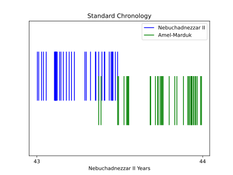
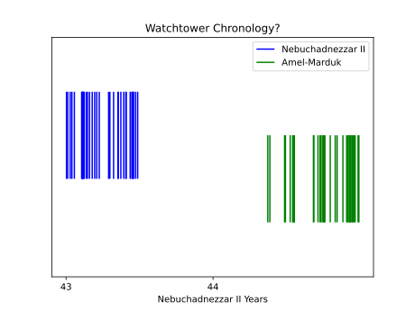

Criticism of the Business Tablet Record
Watchtower 2011
The Watchtower 2011 [1, p. 23] claims that the dates found in the business tablets must indicate that the record is not complete, and the chronology should be extended over a greater number of years than currently allowed for.
Nebuchadnezzar II to Amel-Marduk
The section starts by quoting R.H. Sack regarding an overlap between the last known tablets for Nebuchadnezzar and the earliest known tablets for Amel-Marduk:
What have experts said? R. H. Sack examined numerous business tablets from the Neo-Babylonian period. In 1972, Sack wrote that new unpublished British Museum texts placed at his disposal “completely upset” previous conclusions regarding the transition of rule from Nebuchadnezzar II to his son Amel-Marduk (also known as Evil-merodach).⁶ How so? Sack knew that tablets showed Nebuchadnezzar II to be still ruling in the sixth month of his last (43rd) year. But these newly deciphered tablets from the accession year of the following king, Amel-Marduk, were dated to the fourth and fifth months of what had been assumed to be the same year.⁷ Clearly, there was a discrepancy.
- Amel-Marduk 562-560 B.C.—A Study Based on Cuneiform, Old Testament, Greek, Latin and Rabbinical Sources. With Plates, by Ronald H. Sack, published 1972, page 3.
7. The tablets BM 80920 and BM 58872 are dated in Evil-merodach’s fourth and fifth months of his accession year. These were published by Sack in Amel-Marduk 562-560 B.C.—A Study Based on Cuneiform, Old Testament, Greek, Latin and Rabbinical Sources. With Plates, pages 3, 90, 106.
However, this isn’t entirely correct; according to both C.B.F. Walker’s unpublished list of corrections [2, p. 8] and the British Museum website [3] the date in BM 80920 (Sack No. 56) is actually month 7 of Amel-Marduk’s accession year, rather than month 4, so this tablet does not overlap.
The Watchtower also claims that there is a tablet dated to month 10 of Nebuchadnezzar’s 43rd year:
What do the documents show? There are further discrepancies in the transition of one king to another. For example, the documents show that Nebuchadnezzar II was still ruling in his tenth month—six months after his successor is assumed to have begun reigning.⁸
- The tablet in the British Museum (BM 55806) is dated to the tenth month, 43rd year.
But this isn’t entirely correct either, according to the both Walker’s list [2, p. 3] and the museum website ‘the year number is far from clear’ [4], so it is not of much use for chronology. Hence, as already noted in the business tablets section, there are actually only two tablets overlapping by about a month:

In their quotation of Sack The Watchtower omits the full context where he interprets the small overlap as indicating a co-regency [5, p. 3]:
However, two new unpublished British Museum texts, recently placed at my disposal, completely upset this convinient arrangement. Part of one text (which may have included the name of the city in which it was composed) is unfortunately broken off, but most of the date formula has happily survived. The texts (nos. 56 and 79 in the corpus), surprisingly enough, are quite clearly dated to the months Du’uzu and Abu (i.e., the foruth and fifth months of the Babylonian calendar year) of the accession year of Amēl-Marduk, and thus clearly overlap the final, or forty-third year, of his father Nebuchadnezzar. As Parker and Dobberstein have already shown, texts continue to be dated to the reign of Nebuchadnezzar throughout the month of Ululu (sixth month) of his final year. Although most of the known contracts dated to the sixth month are from the south (Uruk), nevertheless it hardly seems reasonable that it would have taken well over two months for the news of Nebuchadnezzar’s death to reach Uruk from Babylon (unless, indeed, this new text dated in the month of Du’uzu might lead to the conclusion that he died earlier than was formerly thought). Evidence from the accession year of Neriglissar more than negates this hypothesis. Furthermore, the existence of two texts dated to the same day (Oct. 8, 562), with one bearing the name of Amēl-Marduk, and the other of Nebuchadnezzar, more than likely points to the early days of October as the time when the king actually died. In view of this new (though admittedly scanty) evidence, it seems much more probable that a kind of coregency existed prior to Nebuchadnezzar’s death. Perhaps future discoveries will clarify this point.
See Sack’s response where he says he has been misrepresented by The Watchtower.
The Watchtower claims that this overlap is not logical, that there must instead be ‘additional years’ in between. But since the Bible’s internal chronology limits Nebuchadnezzar’s reign to around 43 or 44 years anyway (because of Jehoiachin’s 37 years of captivity), the alternative chronology as implied by The Watchtower could only really add one additional year here:

This scheme would result in an unexplained 11-month gap between the last tablets dated to Nebuchadnezzar and first for Amel-Marduk, which seems unusual given the substantial quantity discovered from the rest of their reigns.
Amel-Marduk to Neriglissar
The Watchtower suggests a similar scenario for Amel-Marduk to Neriglissar:
A similar discrepancy exists with the transition between Amel-Marduk and his successor, Neriglissar.⁹
- Tablets BM 75106 and BM 61325 are dated in the seventh and tenth months of what is considered the last (second) year of the ruling king Evil-merodach. However, the tablet BM 75489 is dated in the second month of the accession year of Neriglissar, his successor.—Catalogue of the Babylonian Tablets in the British Museum, Volume VIII, (Tablets From Sippar 3) by Erle Leichty, J. J. Finkelstein, and C.B.F. Walker, published 1988, pages 25, 35.
Catalogue of the Babylonian Tablets in the British Museum, Volume VII, (Tablets From Sippar 2) by Erle Leichty and A. K. Grayson, published 1987, page 36.
Neriglissar—King of Babylon, by Ronald H. Sack, published 1994, page- The month on the tablet is Ajaru (second month).
This isn’t entirely correct either, BM 75106 is actually dated to month 4 ‘not month 7 as stated in CBT’ [6] [2, p. 7] so is not an issue, but nevertheless two anomalous tablets do overlap — see the business tablets section for further discussion.
Cyrus II to Cambyses II
The Watchtower claims that the overlaps in the business tablets indicate that the record is not continuous, and therefore not reliable for chronological purposes.
Why are these discrepancies significant? As mentioned earlier, gaps in the history documented by the Babylonian chronicles suggest that we may not have a continuous chronological record. Could others have ruled between the reigns of these kings? If so, additional years would have to be added to the Neo-Babylonian period.
When the years that these kings ruled are totaled and a calculation is made back from the last Neo-Babylonian king, Nabonidus, the date reached for the destruction of Jerusalem is 587 B.C.E. However, this method of dating works only if each king followed the other in the same year, without any breaks in between.
But strangely absent from the article is any mention of the overlapping tablets between Cyrus II and Cambyses II, if we assume The Watchtower’s hypothesis is correct, it would imply either Cyrus II ruled for more than 9 years, or there could have been another ruler between.
This leads to a massive contradiction, because in part 1 of the same article, The Watchtower quotes the very same overlapping business tablets as a key source for deducing the length of Cyrus II’s reign to be 9 years long, and with it establish their entire chronology [7, p. 28].
References
[1] “When Was Ancient Jerusalem Destroyed?—Part Two,” The Watchtower Announcing Jehovah’s Kingdom, pp. 22–28, Nov. 2011, [Online]. Available: https://www.jw.org/en/library/magazines/wp20111101/When-Was-Ancient-Jerusalem-Destroyed-Part-Two/.
[2] C. B. F. Walker, “Corrections and additions to CBT 6-8,” Mar. 1996, [Online]. Available: https://www.jhalsey.com/jerusalem-book/documents/cbf_walker_corrections_additions_cbt_6_8.pdf.
[3] “BM 80920,” The British Museum. [Online]. Available: https://www.britishmuseum.org/collection/object/W_1891-0509-1059.
[4] “BM 55806,” The British Museum. [Online]. Available: https://www.britishmuseum.org/collection/object/W_1882-0714-164.
[5] R. Sack, Amēl-Marduk, 562-560 B.C. A Study Based on Cuneiform, Old Testament, Greek, Latin and Rabbinical Sources, vol. 4. Butzon & Bercker, 1972.
[6] “BM 75106,” The British Museum. [Online]. Available: https://www.britishmuseum.org/collection/object/W_1883-0118-AH-433.
[7] “When Was Ancient Jerusalem Destroyed?—Part One,” The Watchtower Announcing Jehovah’s Kingdom, pp. 26–31, Oct. 2011, [Online]. Available: https://www.jw.org/en/library/magazines/wp20111001/When-Was-Ancient-Jerusalem-Destroyed-Part-One/.